NIHAO XVIII: أصل ظواهر MOND في منحنيات دوران المجرات ضمن كون
الملخص
إن الأساس الظاهراتي للديناميكيات النيوتونية المعدلة (MOND) هو علاقة التسارع الشعاعي (RAR) بين التسارع المرصود، ، والتسارع الذي تفسره الباريونات المرصودة (النجوم والغاز البارد)، . نبيّن أن RAR تنشأ طبيعيا في عينة NIHAO المؤلفة من 89 محاكاة كونية عالية الدقة لتكوّن المجرات في إطار . يبلغ التشتت الكلي في NIHAO فقط 0.079 dex، وهو متسق مع القيود الرصدية. غير أننا نبيّن أن التشتت يعتمد على الكتلة النجمية. فعند الكتل العالية () لا يتجاوز التشتت المحاكى dex، ويزداد إلى dex عند الكتل المنخفضة (). وتُظهر الأرصاد اعتمادا مماثلا للتشتت الجوهري. عند الكتل العالية يكون التشتت الجوهري متوافقا مع التشتت الصفري الذي تفترضه MOND، أما عند الكتل المنخفضة فالتشتت الجوهري غير صفري، مما يضعف MOND بقوة. إن تطبيق MOND على محاكاتنا يعطي ملاءمات جيدة على نحو لافت لمعظم مقاطع السرعة الدائرية. وفي حالات الخلاف الطفيف يمكن ضبط نسبة الكتلة النجمية إلى اللمعان و/أو “المسافة” للحصول على ملاءمات مقبولة، كما يُفعل غالبا في نماذج الكتلة الرصدية. في المجرات القزمة ذات تنهار MOND، إذ تتنبأ بتسارعات أدنى من المرصودة ومن الموجودة في محاكاة لدينا. إن الافتراضات التي تقوم عليها MOND (مثل منحنيات الدوران المسطحة تقاربيا، والتشتت الجوهري الصفري في RAR) صحيحة تقريبا فقط في . ولذلك، إذا رغب المرء في تجاوز الديناميكيات النيوتونية، فثمة حرية أكبر في RAR المرصودة مما تفترضه MOND.
keywords:
الطرائق: عددية – المجرات: المعلمات الأساسية – المجرات: الهالات – المجرات: الحركيات والديناميكيات – المادة المظلمة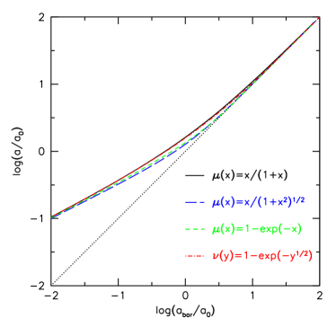
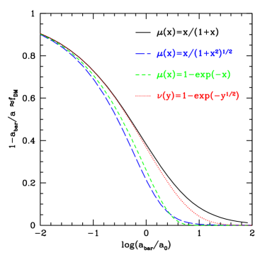
1 المقدمة
تعود الأدلة الرصدية على وجود المادة المظلمة إلى عقود عديدة. فقد بيّن Zwicky (1933) أنه إذا كان عنقود العذراء مرتبطا ثقاليا، فلا بد أن كتلته الكلية تتجاوز كثيرا مجموع كتل أعضائه المنفردين. وفي عقد 1970 وُجد أن منحنيات دوران المجرات تستوي عند أنصاف أقطار كبيرة، مما يدل على وجود كتلة كبيرة خارج الأبعاد المرئية بصريا للمجرات (Faber & Gallagher, 1979).
وتأتي أدلة إضافية على الكتلة المفقودة من نمو البنية الكونية. فخلفية الميكروويف الكونية (CMB) منتظمة على نحو لافت، مع تقلبات حرارية مقدارها (Smoot et al., 1992). ولكي تنمو هذه التقلبات في الكثافة لتصبح المجرات المرصودة ، يلزم أن تزداد بعامل قدره ! وفي كون تهيمن عليه الباريونات، ولكي تكون البنية غير خطية الآن، كان ينبغي أن تكون التقلبات المستحثة في CMB أكبر بكثير مما يُرصد. أما في كون تهيمن عليه المادة المظلمة، فتنمو اضطرابات المادة المظلمة قبل إعادة الاتحاد، ويستحث ذلك نموا سريعا في اضطرابات الباريونات بعد إعادة الاتحاد بقليل، مما يسمح بتكوّن بنية غير خطية الآن انطلاقا من تقلب باريوني أصغر عند إعادة الاتحاد (Bond et al., 1980).
واقترح Milgrom (1983) بديلا للمادة المظلمة، إذ نظر في احتمال ألا تكون هناك كتلة مفقودة في المجرات، بل تعديل للديناميكيات النيوتونية (MOND) عند التسارعات المنخفضة ، حيث m s-2. ويُعرّف التسارع المركزي المرصود (في مستوى القرص) كما يلي:
| (1) |
حيث إن هو الجهد الثقالي الكلي. وبالمثل، فإن التسارع المتوقع بسبب الباريونات المرصودة هو . وتقيّد الافتراضات الآتية صورة تعديل الديناميكيات النيوتونية.
الافتراض 1: لا توجد كتلة مفقودة عند التسارعات العالية. ومن ثم
| (2) |
الافتراض 2: تكون منحنيات الدوران مسطحة تقاربيا عند التسارعات المنخفضة. فعند أنصاف الأقطار الكبيرة يُعطى التسارع الكلي بـ ، وتكون الكتلة الباريونية المحصورة ثابتة: . إن اشتراط أن تكون دالة في لا في نصف القطر يقتضي
| (3) |
وبما أن و ثابتان، فهذا يعني أن
| (4) |
ثابت أيضا. لاحظ أن المعادلة 3 هي علاقة تَلي-فيشر الباريونية ذات ميل قدره 4.
الافتراض 3: توجد دالة استيفاء وحيدة، ، بين حدّي التسارع:
| (5) |
غير أن هذه الدالة الاستيفائية لا تحددها النظرية. ومن الخيارات الشائعة
| (6) |
ويمكن عكس ذلك للتعبير عن بدلالة (van den Bosch & Dalcanton, 2000):
| (7) |
وتشمل الخيارات الأخرى ومعكوساتها
| (8) |
| (9) |
و
| (10) |
يبين الشكل 1 هذه الدوال الاستيفائية. وعلى مقياس لوغاريتمي يمتد على 4 رتب مقدار، تبدو الفروق صغيرة (اللوحة اليسرى). أما عند الفحص الأدق فالفروق مهمة (اللوحة اليمنى). عند يختلف فرق الكتلة المعبر عنه على هيئة كسر المادة المظلمة من . وعند يختلف فرق الكتلة من . وتبرز هذه الفروق عدم فرادة التنبؤات الصادرة عن MOND. وغالبا ما تُسمى العلاقة بين التسارع الكلي والتسارع الباريوني (اللوحة اليسرى) علاقة التسارع الشعاعي (RAR)، بينما تُسمى العلاقة بين فرق الكتلة والتسارع الباريوني (اللوحة اليمنى) علاقة فرق الكتلة-التسارع (MDAR, Sanders, 1990; McGaugh, 2004).
أُجريت دراسات نظرية عديدة لـ RAR في سياق ، باستخدام نماذج تحليلية ومحاكاة كونية هيدروديناميكية (مثلا، van den Bosch & Dalcanton, 2000; Di Cintio & Lelli, 2016; Desmond, 2017; Keller & Wadsley, 2017; Ludlow et al., 2017; Navarro et al., 2017). وقد بيّن هؤلاء المؤلفون أن تكوّن المجرات في كون ينتج RAR قريبة من تلك المنسوبة عادة إلى MOND، لكنها ليست مطابقة لها.
في هذه الورقة نستخدم مجموعة NIHAO من محاكاة تكوّن المجرات الكونية (Wang et al., 2015) لاكتساب فهم لأصل RAR في كون . وبالمقارنة مع محاكاة هيدروديناميكية كونية سابقة، تضم NIHAO عددا أكبر من المجرات بدقة أعلى على مدى أوسع من الكتل النجمية للمجرات . في القسم 2 نصف الأرصاد التي نقارن بها من مسح SPARC (Lelli et al., 2016). وفي القسم 3 نصف محاكاة المجرات في NIHAO. وفي القسم 4 نعرض RAR من NIHAO ونقارنها بأرصاد SPARC. وفي القسم 5 نبحث أصل التشتت الصغير في RAR، ونعرض مقارنة لمقاطع المادة المظلمة. ونختتم بملخص في القسم 6.
2 أرصاد SPARC
نستخدم، بوصفها عينتنا الرصدية، قاعدة بيانات Spitzer Photometry and Accurate Rotation Curves (SPARC) (Lelli et al., 2016). وتمثل SPARC أكبر عينة لمنحنيات دوران المجرات ذات بيانات محلولة مكانيا عن توزيع كل من النجوم والغاز. وتمتد العينة الكاملة المؤلفة من 175 مجرة على كامل مدى الكتل النجمية للمجرات المدعومة بالدوران (). وهي تتضمن أرصادا في نطاق قريب من الأشعة تحت الحمراء (m) لتتبع توزيع الكتلة النجمية، وأرصادا عند 21 cm تتتبع غاز الهيدروجين الذري (Hi). كما توفر بيانات 21 cm حقول سرعات تُشتق منها منحنيات الدوران. وفي بعض الحالات تُستكمل منحنيات الدوران بمنحنيات دوران أعلى دقة مكانية من الغاز المتأين. وتصحح جميع منحنيات الدوران اسميا من أجل الميل.
اتباعا لـ McGaugh et al. (2016) نطبق بعض معايير الجودة. أزيلت عشر مجرات ذات ميل للحد من تصحيحات على السرعات المرصودة. ورُفضت اثنتا عشرة مجرة ذات منحنيات دوران غير متناظرة (وهي موسومة بـ ). وبذلك تبقى عينة من 153 مجرة. إضافة إلى ذلك، لا نحتفظ إلا بنقاط البيانات التي تقل أخطاء سرعتها النسبية عن 10%.
يبين الشكل 2 مدرجات تكرارية للخواص النجمية الكلية وخواص غاز الهيدروجين الذري في مجرات SPARC (خطوط زرقاء)، وفي محاكاة NIHAO (تظليل أحمر، انظر القسم 3): الكتلة النجمية، ؛ ونصف قطر نصف الضوء عند 3.6 ميكرون، ؛ وكتلة الهيدروجين الذري، ؛ ونصف القطر الذي عنده تساوي كثافة Hi 1 [pc-2]، . وتعرض اللوحة اليسرى العليا من الشكل 3 منحنيات الدوران لهذه العينة، حيث يوافق ترميز اللون الكتلة النجمية. حدود حاويات الكتلة هي . وتعرض اللوحة السفلى منحنيات دوران متوسطة في حاويات من الكتلة النجمية. ولكل حاوية كتلية نستوفي كل منحنى دوران على شبكة شعاعية، ثم نأخذ المتوسط في . ونحسب أيضا متوسط نصف القطر الأدنى والأقصى، وهو ما يحدد المدى الذي تُرسم عليه منحنيات الدوران المتوسطة. وتعطى الكتلة المتوسطة إلى يمين كل منحنى دوران متوسط. ونرى أن شكل ومدى منحنى الدوران يتغيران منهجيا من الكتل المنخفضة إلى العالية.
نناقش هنا بإيجاز أوجه عدم اليقين في الأرصاد.
- 1.
-
2.
المسافة. بما أن هذه المجرات قريبة، يمكن أن تكون أخطاء المسافة مهمة (تصل إلى 30%). ولا يملك إلا جزء فرعي من عينة SPARC مسافات دقيقة (5%) من مثل استخدام قمة فرع العمالقة الحمر (TRGB). وبما أن الحجم الفيزيائي يتدرج مثل ، واللمعان مثل ، فإن تسارع الباريونات () مستقل عن المسافة. كما أن سرعة الدوران المرصودة مستقلة عن المسافة (مع إهمال تلطيخ الحزمة الذي يشتد في المجرات الأبعد)، ومن ثم يعتمد التسارع الكلي على المسافة مثل .
-
3.
منحنيات الدوران. يعتمد التحويل من الدوران المرصود إلى السرعة الدائرية على الميل، والدعم الضغطي، والالتواءات (ولا سيما عند أنصاف الأقطار الكبيرة).
-
4.
ميزانية الغاز. توجد غالبية الغاز في المجرة في صورة هيدروجين ذري، وهو مرصود في مجرات SPARC، لكن هناك أيضا كمية صغيرة من الغاز الجزيئي والمتأين، يصعب رصدها، وهي مفقودة عموما من بيانات SPARC.
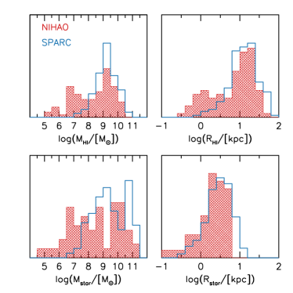
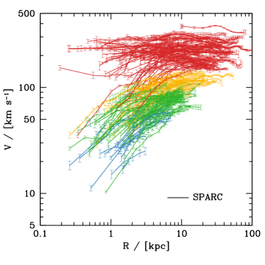
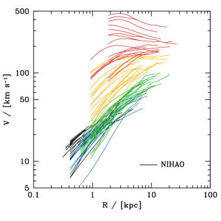
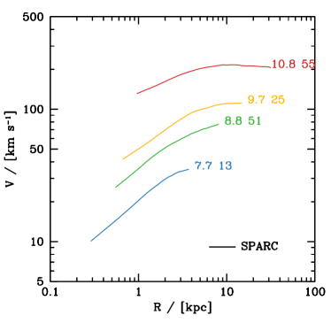
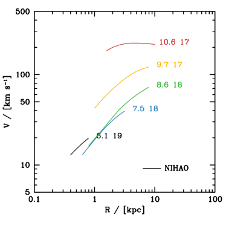
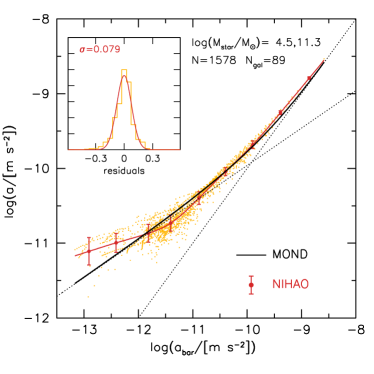
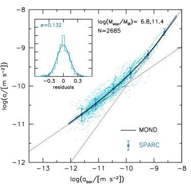
3 محاكاة NIHAO لتكوّن المجرات
بالنسبة إلى التنبؤات النظرية لـ RAR في كون نستخدم محاكاة NIHAO لتكوّن المجرات (Wang et al., 2015). وهي عينة من محاكاة كونية هيدروديناميكية لتكوّن المجرات أُجريت باستخدام شيفرة SPH gasoline2 (Wadsley et al., 2017).
اختيرت الهالات عند الانزياح الأحمر من محاكاة أصلية عديمة التبدد ذات أحجام 60، 20، و15 Mpc، عُرضت في Dutton & Macciò (2014) وتعتمد كونية CDM مسطحة ذات معلمات من Planck Collaboration et al. (2014): معامل هابل = 67.1 Mpc-1، وكثافة المادة ، وكثافة الطاقة المظلمة ، وكثافة الباريونات ، وتطبيع طيف القدرة ، وميل طيف القدرة . وتُختار الهالات بانتظام في لوغاريتم كتلة الهالة من إلى من دون الرجوع إلى تاريخ اندماج الهالة أو تركيزها أو معامل دورانها. ونُفذ تكوّن النجوم والتغذية الراجعة كما في Stinson et al. (2006, 2013). واختيرت الكتلة وتليين القوة بحيث يحلان مقطع الكتلة في الهالة الهدف عند من نصف القطر الفيروسي، مما ينتج جسيم مادة مظلمة داخل نصف القطر الفيروسي لكل الهالات عند . والدافع إلى هذا الاختيار هو ضمان أن تحل المحاكاة ديناميكيات المجرة على مقياس أنصاف أقطار نصف الضوء، التي تكون عادة من نصف القطر الفيروسي (Kravtsov, 2013).
ولكل محاكاة هيدروديناميكية محاكاة مقابلة للمادة المظلمة فقط (DMO) بالدقة نفسها. وقد بدأت هذه المحاكاة باستخدام شروط ابتدائية مطابقة، مع استبدال الجسيمات الباريونية بجسيمات مادة مظلمة. والعينة الكاملة من المحاكاة الهيدروديناميكية التي نستخدمها هي 89. وعند مقارنة المحاكاة الهيدروديناميكية بـ DMO نستبعد 5 محاكاة تكون فيها إما المحاكاة الهيدروديناميكية أو محاكاة DMO في حالة اندماج رئيسية، ومن ثم تكون خارج الاتزان.
حُددت الهالات في محاكاة التكبير الخاصة بـ NIHAO باستخدام مكتشف هالات هجين MPI+OpenMP AHF22 2 http://popia.ft.uam.es/AMIGA (Gill et al., 2004; Knollmann & Knebe, 2009). ويحدد AHF مناطق فرط الكثافة المحلية في حقل كثافة مملس تكيفيا بوصفها مراكز هالات مرشحة. وفي هذه الدراسة نستخدم هالة واحدة من كل محاكاة تكبير (تلك ذات أكبر عدد من الجسيمات). وتُعرّف الكتل الفيروسية للهالات بأنها الكتل داخل كرة يكون متوسط كثافتها 200 مرة من كثافة المادة الحرجة الكونية، . وتُرمز كتلة المحاكاة الهيدروديناميكية وحجمها وسرعتها الدائرية الفيروسية بـ: ، ، . أما الخواص المقابلة في محاكاة المادة المظلمة فقط فتُرمز بأس علوي، . وبالنسبة إلى الباريونات نحسب الكتل المحصورة داخل كرات نصف قطرها ، وهو ما يقابل إلى kpc. والكتلة النجمية داخل هي ، والهيدروجين الذري، Hi، داخل يُحسب اتباعا لـ Rahmati et al. (2013) كما وُصف في Gutcke et al. (2017).
تمثل محاكاة NIHAO أكبر مجموعة من محاكاة التكبير الكونية التي تغطي مدى كتل الهالات . وتكمن فرادتها في الجمع بين الدقة المكانية العالية وعينة إحصائية من الهالات. وفي سياق فإنها تكوّن الكمية “الصحيحة” من النجوم اليوم وفي الأزمنة السابقة (Wang et al., 2015). كما أن كتل الغاز البارد وأحجامه فيها متسقة مع الأرصاد (Stinson et al., 2015; Macciò et al., 2016; Dutton et al., 2019)، وتتبع علاقات تَلي-فيشر للغاز والنجوم والباريونات (Dutton et al., 2017). وعلى مقياس المجرات القزمة تتمدد هالات المادة المظلمة، فتنتج مقاطع كثافة مادة مظلمة ذات لباب متسقة مع الأرصاد (Tollet et al., 2016)، وتحل مشكلة “أكبر من أن تفشل” في مجرات الحقل (Dutton et al., 2016). وهي تعيد إنتاج تنوع أشكال منحنيات دوران المجرات القزمة Santos-Santos et al. (2018)، ودالة سرعة عرض خط Hi (Macciò et al., 2016; Dutton et al., 2019). كما تطابق المورفولوجيا المتكتلة المرصودة للمجرات في CANDELS (Buck et al., 2017). وبذلك توفر قالبا جيدا لدراسة RAR في سياق .
تُعرض مدرجات الكتل والأحجام النجمية وكتل وأحجام الهيدروجين الذري بتظليل أحمر في الشكل 2. وبصورة عامة تمتلك NIHAO وSPARC توزيعات متشابهة، لكن NIHAO تمتد إلى كتل أدنى. وتعرض اللوحات اليمنى من الشكل 3 مقاطع السرعة الدائرية من محاكاة NIHAO لتكوّن المجرات. وقد حُسبت هذه باستخدام الجهد في مستوى القرص وفق المعادلة 1. ورُسمت محاكاة NIHAO من طولي تليين لقوة المادة المظلمة ( نصف قطر التقارب)، إلى نصف القطر الذي يحصر 90% من HI (أي حافة HI المجري القابل للرصد). والمدى الشعاعي لمقاطع السرعة مشابه، لكنه أضيق قليلا. أما تغير أشكال مقاطع السرعة من الكتل المنخفضة إلى العالية فيتشابه بين المحاكاة والأرصاد. وتوجد اختلافات تفصيلية، تعود جزئيا على الأقل إلى اختلافات في توزيع الباريونات.
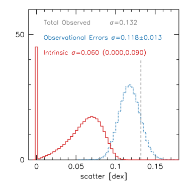
4 علاقة التسارع الشعاعي
يبين الشكل 4 العلاقة بين التسارع الكلي، ، والتسارع الناتج عن الباريونات، لمجرات NIHAO (يسارا) وأرصاد SPARC (يمينا). وتبين النقاط جميع القياسات الفردية للمجرات المرصودة والمحاكاة. ويبلغ العدد الكلي لنقاط البيانات في NIHAO و في SPARC. وبالنسبة إلى NIHAO نأخذ عينات من مقاطع السرعة الدائرية خطيا بوحدات نصف القطر الفيروسي، لكننا لا ندرج إلا النقاط القابلة للرصد (أي داخل نصف قطر HI). وهذا مشابه للأرصاد التي تميل إلى أخذ عينات من منحنيات الدوران خطيا في نصف القطر، وبأعداد متشابهة من نقاط البيانات للمجرات مختلفة الكتلة. وتبين النقاط الكبيرة ذات أشرطة الخطأ متوسط في حاويات من ، بينما يبين شريط الخطأ التشتت حول العلاقة المتوسطة المستوفاة بالشرائح.
يبين الخط الأسود المتصل العلاقة التي لاءمها McGaugh et al. (2016) مع بيانات SPARC. وقد اختير الشكل الدالي ليتبع العلاقات التقاربية للتسارعات العالية والمنخفضة في MOND (خطوط منقطة). وعموما تقدم محاكاة NIHAO مطابقة جيدة جدا لـ RAR المرصودة. ويبدو الاتفاق جيدا خصوصا إذا أخذنا في الحسبان وجود نظاميات رصدية، مثل نسبة الكتلة النجمية إلى الضوء ومقياس المسافة، يمكنها إزاحة العلاقة المرصودة (McGaugh et al., 2016; Lelli et al., 2017). علاوة على ذلك، فإن محاكاة NIHAO هي بالضرورة تقريب لكيفية تكوّن المجرات في كون .
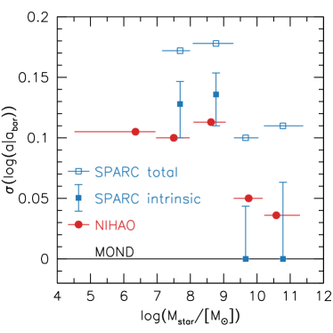
تعرض اللوحات الداخلية التشتت حول العلاقة المتوسطة المستوفاة (مدرجا تكراريا). ويُعطى الانحراف المعياري والتوزيع الغاوسي المقابل بالأحمر (لـ NIHAO) والأزرق (لـ SPARC). ولا يتجاوز التشتت في NIHAO 0.079 dex. وقد أبلغت دراسات أخرى لمحاكاة عن تشتتات صغيرة مماثلة (Keller & Wadsley, 2017; Ludlow et al., 2017). وهذا أقل من التشتت المرصود الكلي البالغ 0.132 dex. غير أن هناك أخطاء رصدية، ما يعني أن التشتت الجوهري أصغر. وينبغي التنبه إلى أن الأخطاء الرصدية يمكن من حيث المبدأ أن ترتبط بإزاحات عن RAR، مما يؤدي إلى تشتت مرصود أصغر من التشتت الجوهري. فعلى سبيل المثال، إذا كانت المجرات ذات نجمي أعلى تمتلك أدنى، فسوف ينتج عن ذلك أن تكون RAR المقاسة بقيمة ثابتة أقل تشتتا من RAR الحقيقية.
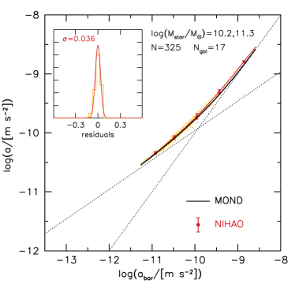
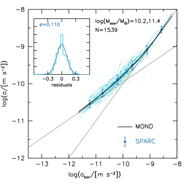
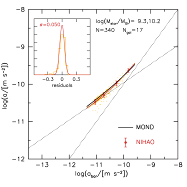
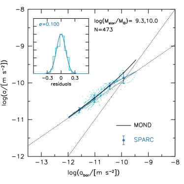
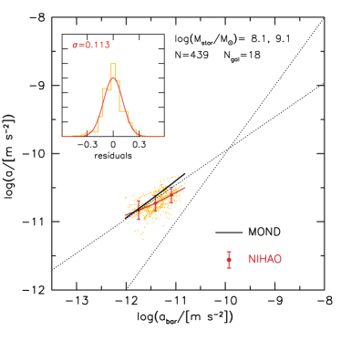
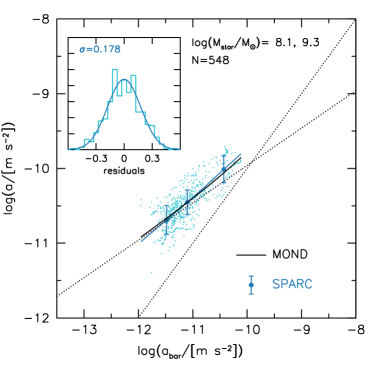
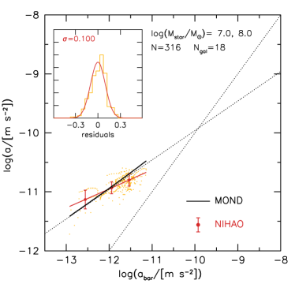
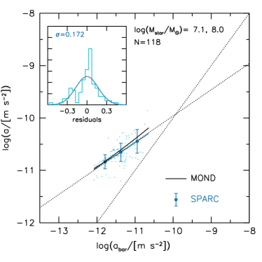
4.1 التشتت الجوهري من الأرصاد
كما نوقش أعلاه، تشمل مصادر الخطأ الرصدية المسافة، ونسبة الكتلة النجمية إلى الضوء، وميل القرص، وسرعة الدوران، وتدفق الهيدروجين الذري. ووفقا لـ McGaugh et al. (2016) تساهم هذه المصادر بـ 0.08 و0.06 و0.05 و0.03 و0.01 dex في التشتت في عند ، مما يعطي خطأ رصديا كليا قدره 0.116 dex. وبطرح هذا (تربيعيا) من التشتت المرصود الكلي البالغ 0.132 dex نحصل على تشتت جوهري قدره 0.063 dex.
غير أنه ينبغي ملاحظة أن الأخطاء الرصدية ليست سوى تقديرات. فقد تكون الأخطاء الرصدية الحقيقية أكبر أو أصغر. فعلى سبيل المثال، يعتمد McGaugh et al. (2016) خطأ في نسبة الكتلة النجمية إلى الضوء مقداره 0.11 dex. ويمكن أن يقع الخطأ الحقيقي بصورة معقولة في أي مكان ضمن المجال 0.05 إلى 0.20 dex، وقد يعتمد منهجيا على كتلة المجرة أو خاصية مجرية أخرى. وللحصول على تصور عن المجال المعقول للتشتت الجوهري نفترض أن الأخطاء الرصدية مسحوبة من توزيع غاوسي له المتوسط المحدد أعلاه، وانحراف معياري يساوي 20% من المتوسط. فعلى سبيل المثال، إذا ذُكر أن أخطاء المسافة هي 0.08 dex، نعتمد انحرافا معياريا قدره 0.016 dex.
وبافتراض أن أوجه عدم اليقين في أخطاء المصادر الخمسة غير مترابطة، نجد باستخدام محاكاة مونت كارلو أن الخطأ الرصدي الكلي هو (الشكل 5). وبطرح هذا من التشتت المرصود الكلي البالغ 0.132 dex نحصل على تشتت جوهري ذي تباين واسع (المدرج الأحمر). ويمتد فاصل الثقة 90% من الصفر إلى dex. ولذلك فإن التشتت في RAR من محاكاتنا، ومقداره 0.079 dex، متسق مع الأرصاد. كما أن تنبؤ MOND بتشتت جوهري صفري متسق أيضا مع الأرصاد. ومن أجل استخدام التشتت في RAR للتمييز بين وMOND، نحتاج إما إلى قياس أكثر دقة، أو، كما سنرى أدناه، إلى النظر في تشتت RAR للمجرات ذات الكتل المختلفة.
وأكبر مصدر لعدم اليقين الرصدي هو المسافات، إذ يمثل نصف التباين الكلي. لذلك إذا أمكن تقليص هذه الأخطاء فسيكون ممكنا تحسين التشتت الجوهري بدرجة مهمة. إن المجرات ذات أكبر أخطاء مسافة في مسح SPARC تستخدم تدفق هابل، ، ومن ثم توفر السرعات الخاصة المجهولة مصدرا عشوائيا للخطأ، بينما توفر قيمة ثابت هابل خطأ نظاميا. ويمكن تقليل خطأ السرعة الخاصة ببساطة برصد مجرات على مسافات أكبر. وهذا أسهل قولا منه فعلا، لأن المجرات الأبعد لها أحجام زاوية أصغر. ومن الممكن الحصول على منحنيات دوران باستخدام خطوط انبعاث بصرية لمثل هذه المجرات (مثلا، Courteau et al., 2007)، لكن خرائط غاز الهيدروجين الذري ستحتاج إلى مقاريب راديوية مستقبلية مثل Square Kilometer Array (SKA). وسيكون لها من الدقة والحساسية ما يكفي لقياس خرائط كثافة HI ومنحنيات دوران المجرات على مسافات كبيرة بما يكفي لجعل أخطاء السرعة الخاصة مهملة.
4.2 اعتماد RAR على الكتلة
يبين الشكل 6 اعتماد التشتت في RAR على الكتلة النجمية. في كل من المحاكاة والأرصاد تمتلك المجرات الأعلى كتلة تشتتا أصغر من المجرات الأدنى كتلة. ففي حاوية الكتلة الأعلى المتمركزة عند ، لا يتجاوز التشتت في NIHAO 0.036 dex (0.045 dex بالنسبة إلى MOND)، مقارنة بـ 0.110 dex في SPARC. وفي الحاوية الكتلية المتمركزة عند يزداد التشتت في NIHAO إلى 0.10 dex (0.14 dex بالنسبة إلى MOND)، مقارنة بـ 0.172 dex في SPARC.
والفروق التربيعية بين التشتت المحاكى والمرصود من الكتل العالية إلى المنخفضة هي 0.104 و0.087 و0.138 و0.140 dex. وبعبارة أخرى، هذه هي مقادير أخطاء القياس اللازمة للتوفيق بين التشتت المرصود والتشتت المحاكى. واستنادا إلى الشكل 5 وإلى أخطاء القياس المذكورة لمجرات SPARC، التي لا تتغير كثيرا مع كتلة المجرة، فهذه أرقام معقولة. ولذلك نستنتج أن التشتت المعتمد على الكتلة في RAR الخاصة بـ NIHAO متسق مع التشتت الجوهري من الأرصاد. كما أن التشتت الصفري الذي تفترضه MOND متسق أيضا مع المجرات العالية الكتلة ، لكنه غير متسق مع المجرات المنخفضة الكتلة . ومن ثم، باستخدام البيانات نفسها التي استُخدمت دليلا مؤيدا لـ MOND بواسطة McGaugh et al. (2016)، بيّنا أن التشتت الجوهري في RAR يضعف MOND فعلا، ويتفق على نحو ممتاز مع تنبؤات . وتردد نتيجتنا صدى نتيجة Rodrigues et al. (2018) الذين خلصوا إلى أن منحنيات الدوران المرصودة من SPARC لا يمكن ملاءمتها بـ MOND مع افتراض قيمة كونية لمقياس التسارع، .
يبين الشكلان 7 و 8 RAR مقسمة إلى أربع حاويات من الكتلة النجمية متمركزة عند ، ، ، و. وهذه الحاويات هي نفسها المستخدمة في الشكل 3، وقد اختيرت لتضم عددا متقاربا من مجرات NIHAO في كل حاوية.
ومن السمات البارزة في كل من المحاكاة والأرصاد أن المجرات الأعلى كتلة تمتد على مدى أوسع من التسارعات مقارنة بالمجرات الأدنى كتلة. ويعود ذلك إلى التغير المنهجي في شكل مقاطع السرعة الدائرية مع كتلة المجرة (انظر الشكل 3). فالمجرات الأعلى كتلة تمتلك مقاطع سرعة قريبة من الثبات، ومن ثم يتغير التسارع عكسيا مع نصف القطر، بينما تمتلك المجرات المنخفضة الكتلة مقاطع سرعة صاعدة ذات ميول قريبة من 0.5، مما ينتج تسارعا مستقلا عن نصف القطر.
بالنسبة إلى أعلى حاويتين كتليتين (الشكل 7)، تتبع RAR المتوسطة في NIHAO RAR الخاصة بـ MOND عن قرب شديد. أما بالنسبة إلى أدنى حاويتين كتليتين (الشكل 8)، فتُظهر RAR المتوسطة في NIHAO انحرافات عن RAR الخاصة بـ MOND. فعند تسارعات باريونية مقدارها تبالغ MOND في التنبؤ مقارنة بـ NIHAO، بينما عند تقلل MOND من التنبؤ مقارنة بـ NIHAO. ويستمر هذا الاتجاه عندما ننظر إلى مجرات حتى أدنى كتلة.
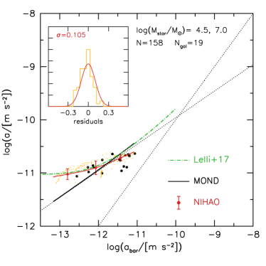
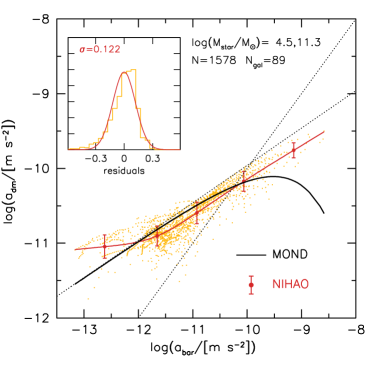
يبين الشكل 9 RAR لأدنى المجرات كتلة في NIHAO، ذات كتل نجمية بين و . وتنحرف هذه المجرات كثيرا عن علاقة MOND دون مقياس تسارع قدره m s-2. ويبين الخط الأخضر ملاءمة لـ RAR المرصودة للمجرات القزمة الكروية من Lelli et al. (2017). ومع أن الأقزام المرصودة والمحاكاة لها مجالات متشابهة من الكتل النجمية، فإن هناك بعض الفروق التي ينبغي أخذها في الاعتبار. فالأرصاد تخص أساسا مجرات تابعة، في حين أن المحاكاة كلها لمجرات مركزية. أما التسارعات الكلية المرصودة فتستند إلى الحركيات النجمية، في حين نعرض في المحاكاة نقاطا مأخوذة من أنصاف الأقطار القابلة للرصد بالهيدروجين الذري (بالإجراء نفسه المتبع للمجرات الأكثر كتلة). وتبين الدوائر السوداء في الشكل 9 RAR لمجرات NIHAO عند موضع أنصاف أقطار نصف الكتلة المسقطة للنجوم. وتميل هذه النقاط إلى أخذ عينات من تسارعات أعلى، لكنها تتبع الاتجاه نفسه الذي تتبعه نقاط منحنى السرعة الكامل. وعلى الرغم من وجود بعض التحفظات في المقارنة بين محاكاتنا المبنية على والأرصاد، فإن الاتفاق علامة مشجعة.
إن انحراف RAR المرصودة للمجرات القزمة الكروية عن تنبؤ MOND يمثل إخفاقا ظاهريا آخر لـ MOND. والافتراض المعين الذي ينهار هو أن RAR لها ميل قدره 1/2 عند التسارعات الباريونية المنخفضة. وتذكر أن هذا الافتراض وُضع لضمان أن تكون منحنيات الدوران مسطحة تقاربيا عند أنصاف الأقطار الكبيرة.
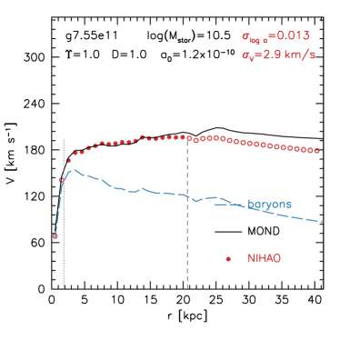
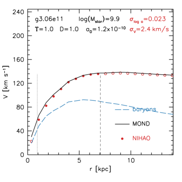
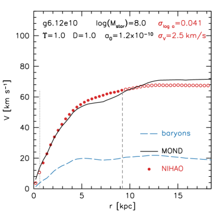
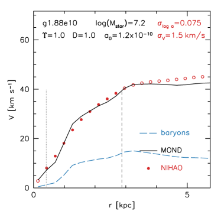
4.3 علاقات أخرى للتسارع الشعاعي
رصديا يكون محورا RAR مستقلين، غير أنهما في المحاكاة مترابطان عندما يكون كسر المادة المظلمة منخفضا، لأن . ويبين الشكل 10 طريقة بديلة للنظر إلى RAR: تسارع المادة المظلمة مقابل التسارع الباريوني. وهذه هي تماما البيانات نفسها كما في الشكل 4، لكن مع محورين مستقلين نرى بوضوح أن NIHAO وMOND يتباعدان عند التسارعات الباريونية العالية. كما أن التشتت في أكبر أيضا من تشتت : 0.122 مقابل 0.079. ومن الناحية الرصدية لا يُنصح بحساب تسارع المادة المظلمة، لأن أخطاء القياس يمكن أن تؤدي إلى قيم سالبة. غير أنه سيكون ممكنا تحديد التشتت في من خلال نمذجة أمامية لـ RAR المرصودة.
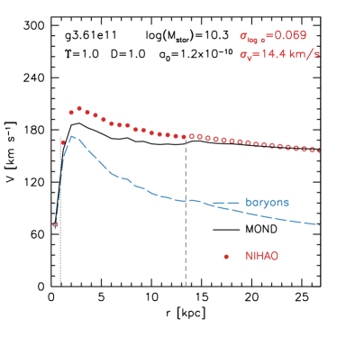
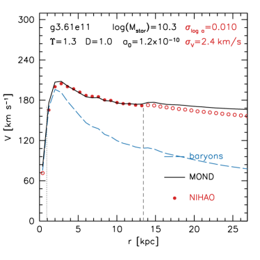
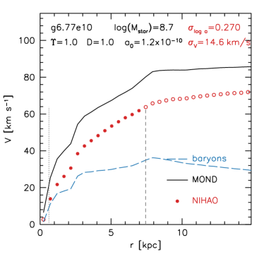
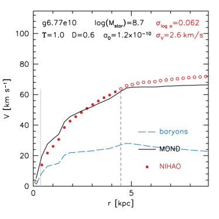
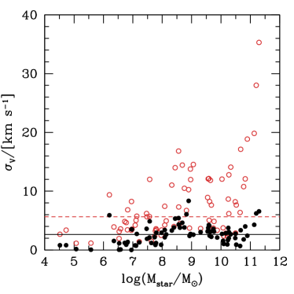
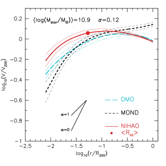
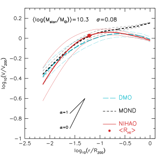
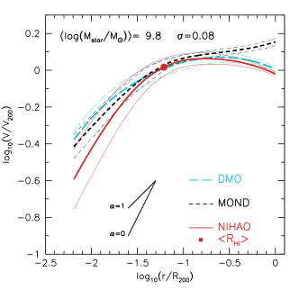
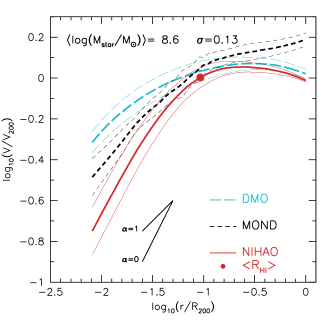
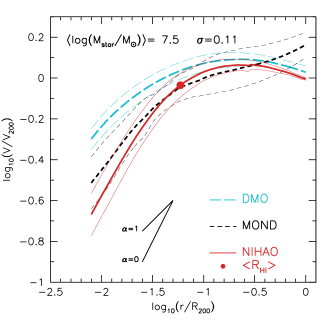
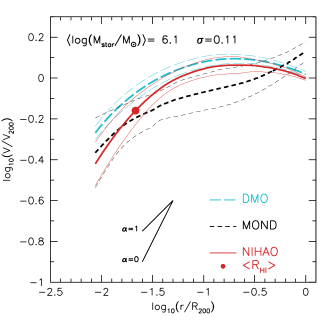
5 أصل تشتت RAR في LCDM
بعد أن أثبتنا أن محاكاة NIHAO تعيد إنتاج ميول RAR وتطبيعها وتشتتها الصغير، نسأل الآن: من أين يأتي هذا التشتت الصغير في محاكاتنا؟
وبما أن RAR وصفة تربط التسارع الكلي بالتسارع الناتج عن الباريونات، يمكننا تطبيق RAR على مقاطع السرعة الدائرية الباريونية في محاكاتنا (الخطوط الزرقاء المتقطعة في الشكل 11). ومقاطع السرعة الدائرية الباريونية هي المجموع (التربيعي) للسرعة الدائرية الناتجة عن النجوم والغاز، محسوبة من الجهد الثقالي في مستوى القرص.
يبين الشكل 11 أمثلة لأربع محاكاة تتنبأ فيها وصفة MOND (الملاءمة لبيانات SPARC) بدقة بمقطع السرعة الدائرية للمحاكاة. ويُعطى الانحراف المعياري لـ و في أعلى اليمين. إن الاتفاق، في حدود ، لافت للنظر! ونؤكد أنه لا توجد معاملات حرة. وتمتد الكتل النجمية لهذه الأمثلة على أكثر من ثلاث رتب مقدار، من إلى .
غير أننا اخترنا هذه الأمثلة 4 من عينة تضم 89 مثالا. ويعرض الشكل 12 مثالين على محاكاتين تفشل فيهما وصفة MOND بوضوح، إحداهما حيث تقلل MOND من التنبؤ بالسرعة (g3.61e11، أعلى اليسار)، والأخرى حيث تبالغ MOND في التنبؤ (g6.77e10، أسفل اليسار). بالنسبة إلى g3.61e11 يمكن الحصول على ملاءمة ممتازة ببساطة عن طريق إعادة قياس مقطع الكتلة النجمية بعامل 1.3 (أي 0.11 dex)، وهو عدم يقين نمطي في نسبة الكتلة النجمية إلى الضوء المرصودة. وبالنسبة إلى g6.77e10 لا يكون لتغيير تطبيع الكتلة النجمية أثر كبير لأن الباريونات يهيمن عليها الغاز. وفي هذه الحالة يمكن الحصول على ملاءمة جيدة بتقليل المسافة بنسبة 40%. وهذا سيكون عدم يقين مقداره في المسافات. ويمكن للمرء أيضا تغيير مقياس التسارع، ، للحصول على أثر مشابه.
يبين الشكل 13 الانحراف المعياري لملاءمات MOND لمقاطع السرعة الدائرية في NIHAO. وتظهر الملاءمة المرجعية (دون معامل حر) بدوائر حمراء مفتوحة. ولا يتجاوز الخطأ الوسيط . وإذا سمحنا للكتلة النجمية والمسافة بالتغير، نستطيع الحصول على ملاءمات أفضل (دوائر سوداء)، بخطأ وسيط لا يتجاوز . ولهذا التحليل صلة بدراسة Li et al. (2018) الذين استطاعوا ملاءمة عينة SPARC بعلاقة RAR واحدة، مع السماح بتغير للقرص والانتفاخ، والمسافة والميل. ويبدو هذا للوهلة الأولى نتيجة مبهرة لصالح MOND. غير أن تحليلنا المماثل لمجرات NIHAO يبيّن أن ملاءمات MOND لها حرية زائدة، ويمكنها ملاءمة مقاطع سرعة لمجرات لا ينبغي لها أن تتمكن من ملاءمتها.
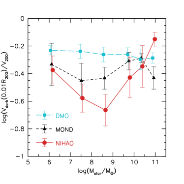
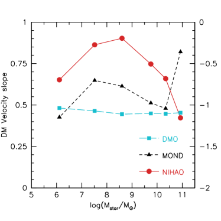
وتبرز هذه الأشكال أيضا بعض مشكلات قياس التشتت في RAR. فلأن التشتت يقاس في الفضاء اللوغاريتمي، تميل المجرات ذات منحنيات الدوران المسطحة إلى امتلاك تشتت أصغر من تلك ذات منحنيات الدوران الصاعدة، حيث تُضخم الأخطاء عند السرعات الصغيرة. وتتمثل المسألة الأخرى في أخذ العينات المكانية. فنحن هنا نأخذ عينات من المجرات بانتظام بوحدات نصف القطر الفيروسي، لكننا لا ندرج إلا النقاط القابلة للرصد (أي داخل نصف قطر HI). لذلك، بالنسبة إلى مجرتين تعيشان في هالتين متشابهتي الكتلة لكن لهما حجمان مختلفان لـ HI، ستمتلك المجرة الأكبر نقاطا أكثر في RAR. وهذا يعني أن للمجرات أوزانا فعالة مختلفة في RAR. وبالنظر إلى أوجه عدم اليقين الكبيرة الحالية في التشتت الجوهري فهذه تفصيلة، لكن في المستقبل سيكون من الضروري أخذ عينات من منحنيات الدوران في الأرصاد والنظرية بطريقة متسقة (انظر مثلا، Desmond, 2017).
5.1 مقاطع المادة المظلمة
بما أن RAR وصفة للتنبؤ بالتسارع الكلي انطلاقا من التسارع الباريوني، فهي بالتالي وصفة للتنبؤ بفرق الكتلة، أو بعبارة أخرى تسارع المادة المظلمة. وعندما تعمل RAR جيدا في NIHAO فهذا يعني أن RAR تتنبأ بدقة بمقطع المادة المظلمة. وبحكم البناء، في المجرات التي تقلل فيها RAR من التنبؤ بالسرعة الدائرية، تقلل RAR من التنبؤ بهالة المادة المظلمة، وفي المجرات التي تبالغ فيها RAR في التنبؤ بالسرعة الدائرية، تبالغ RAR في التنبؤ بهالة المادة المظلمة. ومن المثير عندئذ مقارنة مقاطع المادة المظلمة من RAR مع تلك المستخرجة من محاكاة NIHAO وDMO. وتُجرى هذه المقارنة في الشكل 14.
تعرض كل لوحة مجالا مختلفا من الكتلة النجمية (مناظرا للمجالات المستخدمة في الشكلين 7 - 9)، باستثناء أننا قسمنا أعلى حاوية كتلية إلى اثنتين لجعل مقاطع المادة المظلمة المختلفة عند أعلى الكتل التي نحاكيها أوضح. ويشار إلى متوسط في أعلى يسار كل لوحة. وتبين الخطوط السميكة مقاطع السرعة الدائرية المتوسطة (لـ ) للمادة المظلمة في NIHAO (أحمر متصل)، وDMO (سماوي طويل التقطع)، وNIHAO MOND (أسود قصير التقطع). وتبين الخطوط الرفيعة الانحراف المعياري (لـ ).
ومن الفروق اللافتة بين (في DMO وNIHAO كليهما) و MOND أن MOND عند أنصاف الأقطار الكبيرة (أي قريبا من نصف القطر الفيروسي) تبالغ دائما في التنبؤ بالسرعة الدائرية. ويرجع ذلك إلى افتراض أن عند التسارعات المنخفضة. ولو كانت جميع الباريونات قرب مركز الهالة، لأصبح مقطع السرعة مسطحا بالفعل (وهو ما لن يكون سيئا إلى هذه الدرجة، لكنه سيظل غير متفق مع مقاطع السرعة المتناقصة في المحاكاة)، غير أنه يرتفع عند أنصاف الأقطار الكبيرة بسبب الغاز في الهالة. وتذكر أننا في مقارنتنا ببيانات SPARC لم نأخذ إلا أنصاف الأقطار التي يمكن تتبعها بغاز الهيدروجين الذري، والذي يمتد عادة حتى 5-10% من نصف القطر الفيروسي (انظر الدوائر الحمراء في الشكل 14 التي تبين متوسط نصف قطر Hi ). وعند الاقتصار على أنصاف الأقطار القابلة للرصد، تقع مقاطع المادة المظلمة في MOND عادة بين خطي DMO وNIHAO.
عند الكتل النجمية بين أدت محاكاة NIHAO إلى تمدد الهالات نحو كثافة ثابتة (قارن مع خطوط المرجع لـ مع و)، وانظر أيضا Tollet et al. (2016). وتميل MOND أيضا إلى التنبؤ بهالات متمددة، لكن ليس بالقدر نفسه الموجود في NIHAO.
أما عند أعلى الكتل (، اللوحة العليا اليسرى) فإن محاكاة NIHAO تمتلك هالات مظلمة منكمشة، بينما تتنبأ MOND بتمدد. وهذه أمثلة مشابهة لما هو معروض في أعلى يسار الشكل 12، حيث يمكن تعويض هذا العجز في المادة المظلمة بزيادة الكتلة النجمية. وعلى الرغم من هذه الفروق، وبما أن مراكز هذه المجرات تهيمن عليها الباريونات، فإنها لا تنزاح إلا بمقدار صغير عن RAR الخاصة بـ SPARC. ومتوسط جذر متوسط المربعات في لهذه المجرات 8 هو 0.056 dex، مما يجعلها مجرات نموذجية. ويتطلب تحديد مقاطع المادة المظلمة رصديا، وبالتالي التمييز بين تنبؤات MOND وNIHAO، تحديدا دقيقا لنسبة الكتلة النجمية إلى الضوء، وهو أمر صعب.
يُعرض ملخص لمقاطع الكثافة في الشكل 15. ويبين هذا السرعة الدائرية للمادة المظلمة عند 1% من نصف القطر الفيروسي مقابل الكتلة النجمية (اللوحة اليسرى)، وميل السرعة الدائرية للمادة المظلمة بين 1 و2% من نصف القطر الفيروسي [] مقابل الكتلة النجمية (اللوحة اليمنى). ويعرض المخططان الاتجاهات النوعية نفسها. فمحاكاة DMO (سماوي) لها بنية شبه حرة المقياس، مع سرعة وميل سرعة . لاحظ أننا نختار إظهار ميل السرعة بدلا من ميل الكثافة (المحلي)، لأن الأخير يتطلب مشتقة إضافية لمقطع السرعة، ومن ثم يكون أكثر ضجيجا في كل من الأرصاد والمحاكاة. كما أن مقطع السرعة الدائرية، أو مكافئه مقطع الكتلة التراكمية، أو مقطع كثافة الكتلة المحصورة التراكمي، له مزايا أيضا من حيث النماذج التحليلية (Dekel et al., 2017). ويمكن تحويل ميل السرعة بسهولة إلى ميل كثافة كتلة محصورة باستخدام . فعلى سبيل المثال، لباب ذو كثافة ثابتة، يقابل ميل سرعة قدره ، وميل كثافة NFW قدره يقابل ميل سرعة قدره ، وميل كثافة متساوي الحرارة قدره يقابل ميل سرعة قدره .
في محاكاة NIHAO الهيدروديناميكية (نقاط وخطوط حمراء) تكون استجابة الهالة معتمدة بقوة على الكتلة (انظر أيضا Tollet et al., 2016; Dutton et al., 2016). عند الكتل النجمية المنخفضة تكون استجابة الهالة ضئيلة جدا. ومع زيادة الكتلة النجمية تتمدد الهالة (أي سرعة أدنى وميل سرعة أعلى)، وتبلغ أقصى تمدد عند كتل نجمية مقدارها ، حيث تكون السرعات أخفض بمقدار dex وتكون ميول السرعة أعلى بمقدار 0.4 من DMO وقريبة من لباب ذي كثافة ثابتة (). وبحلول كتلة مقدارها تكون الهالات في المتوسط غير متغيرة عند أنصاف الأقطار الصغيرة، وعند أعلى الكتل النجمية تنكمش الهالات عند أنصاف الأقطار الصغيرة. أما هالات المادة المظلمة في MOND (نقاط وخطوط سوداء) فتُظهر عادة سلوكا وسطا بين NIHAO وDMO (أي إن الهالات ليست ذات نتوءات مركزية كـ DMO، وليست متمددة مثل NIHAO). والاستثناء عند أعلى الكتل، حيث تملك هالات MOND سرعات أدنى وميولا أعلى، عكس NIHAO، التي تملك سرعات أعلى وميولا أدنى.
6 الملخص
نستخدم 89 محاكاة كونية لتكوّن المجرات من مشروع NIHAO (Wang et al., 2015) لدراسة أصل علاقة التسارع الشعاعي (RAR) في كون . إن الجمع الفريد بين مدى كتل الهالات، والدقة، وعدد الهالات يتيح لنا المقارنة مع أرصاد RAR من مسح SPARC (McGaugh et al., 2016). وتمتد الكتل النجمية لمجرات NIHAO على المجال .
نلخص نتائجنا كما يلي:
-
•
توجد RAR في محاكاة NIHAO بميل وتطبيع مشابهين لما حُدد رصديا بواسطة SPARC (الشكل 4).
-
•
تمتلك RAR في NIHAO تشتتا مقداره 0.079 dex. وهذا متسق مع تقديرات التشتت الجوهري من الأرصاد () (الشكل 5).
-
•
يعتمد التشتت في RAR على الكتلة النجمية للمجرة، مع تشتت أقل في المجرات الأعلى كتلة في كل من الأرصاد والمحاكاة (الشكل 6). وبالنسبة إلى المجرات العالية الكتلة () يكون التشتت الجوهري () متسقا مع كل من MOND وNIHAO. غير أنه بالنسبة إلى المجرات المنخفضة الكتلة () يكون التشتت الجوهري () متسقا مع NIHAO، لكنه غير متسق مع MOND.
-
•
يفسر اعتماد تشتت RAR على الكتلة في المحاكاة جزئيا بالارتباط بين و عند الكسور المنخفضة من المادة المظلمة.
-
•
في أدنى المجرات كتلة التي نحاكيها () تنحرف RAR كثيرا عن تنبؤ MOND، لكنها تتفق مع RAR المرصودة من المجرات القزمة الكروية (الشكل 9).
-
•
يمكننا استخدام RAR للتنبؤ بدقة (ضمن بضعة ) بمقاطع السرعة الدائرية لمحاكاة NIHAO الفردية بمجرد استخدام مقطع السرعة الدائرية الباريونية مدخلا (الشكل 11).
-
•
في الحالات التي تعطي فيها القيم المرجعية ملاءمة رديئة، يمكن إعادة قياس الكتل النجمية و/أو تغيير المسافات للحصول على ملاءمات ممتازة (الشكل 12). وبالنظر إلى أوجه عدم اليقين الواقعية في المقاطع الباريونية ومسافات المجرات، تمتلك MOND مرونة مفرطة في ملاءمة منحنيات دوران المجرات الفردية. ولذلك فإن نجاح MOND في ملاءمة منحنيات دوران المجرات الفردية ليس مبهرا كما يُدعى غالبا (مثلا، Sanders & McGaugh, 2002; Li et al., 2018).
-
•
تتنبأ RAR بمقاطع سرعة دائرية للمادة المظلمة تكون في المتوسط مشابهة لما يوجد في محاكاة (الشكل 14).
- •
- •
قد يبدو مفارقا أن RAR الخاصة بـ MOND تظهر في محاكاة NIHAO لتكوّن المجرات ضمن . والحل هو أن كلا من MOND وNIHAO يقاربان الشيء نفسه (الكون القابل للرصد).
وبما أن الأساس الظاهراتي لـ MOND يُعاد إنتاجه طبيعيا بواسطة محاكاة تكوّن المجرات في ، يبدو أنه لا ضرورة لاستدعاء الافتراضات التبسيطية وقانون القوة الجديد الجذري الذي تتطلبه MOND. وتتمثل مقارنة نافعة في النظام الشمسي. فقد تفترض نظرية ظاهراتية أن مدارات الكواكب دوائر، لأنها تُرصد بوصفها قريبة من الدوائر، وهذا أبسط شكل هندسي. لكننا نعرف أنه عند توفر أرصاد دقيقة بما يكفي تكون المدارات في الحقيقة إهليلجية، وأن نموذج الدائرة تبسيط مفرط.
إن الافتراضات التي تقوم عليها MOND صحيحة تقريبا فقط في : 1) عند التسارعات العالية يكون كسر المادة المظلمة منخفضا، لكنه غير صفري؛ 2) مقاطع السرعة الدائرية ليست مسطحة إلا تقريبا عند نصف قطر HI للمجرة. وعند أنصاف أقطار أكبر تنخفض المقاطع؛ 3) التشتت في RAR صغير، لكنه غير صفري، ويعكس أساسا عدم كونية مقاطع كثافة المادة المظلمة. وأخيرا، نلاحظ أنه إذا رغب المرء في تجاوز الديناميكيات النيوتونية، فثمة حرية أكبر في RAR المرصودة مما تفرضه MOND.
الشكر والتقدير
نشكر الحكم على تقريره السريع الذي أدى إلى تحسينات مهمة في الورقة. ويقر المؤلفون بامتنان بدعم Gauss Centre for Supercomputing e.V. (www.gauss-centre.eu) لهذا المشروع من خلال توفير وقت حوسبة على الحاسوب الفائق GCS Supercomputer SuperMUC في Leibniz Supercomputing Centre (www.lrz.de). وقد أُنجز جزء من هذا البحث أيضا على موارد الحوسبة عالية الأداء في New York University Abu Dhabi؛ وعلى عنقود theo في Max-Planck-Institut für Astronomie؛ وعلى عنقود hydra في Rechenzentrum في Garching. ونحن نقدر كثيرا مساهمات جميع مخصصات الحوسبة هذه. يحصل AO على تمويل من Deutsche Forschungsgemeinschaft (DFG, German Research Foundation) – MO 2979/1-1. حظي TB بدعم Sonderforschungsbereich SFB 881 “The Milky Way System” (المشروعات الفرعية A1 وA2) التابعة لـ DFG. استفاد التحليل من حزمة pynbody (Pontzen et al., 2013).
References
- Bond et al. (1980) Bond, J. R., Efstathiou, G., & Silk, J. 1980, Physical Review Letters, 45, 1980
- Buck et al. (2017) Buck, T., Macciò, A. V., Obreja, A., et al. 2017, MNRAS, 468, 3628
- Courteau et al. (2007) Courteau, S., Dutton, A. A., van den Bosch, F. C., MacArthur, L. A., Dekel, A., McIntosh, D. H., & Dale, D. A. 2007, ApJ, 671, 203
- Dekel et al. (2017) Dekel, A., Ishai, G., Dutton, A. A., & Maccio, A. V. 2017, MNRAS, 468, 1005
- Desmond (2017) Desmond, H. 2017, MNRAS, 464, 4160
- Di Cintio & Lelli (2016) Di Cintio, A., & Lelli, F. 2016, MNRAS, 456, L127
- Dutton & Macciò (2014) Dutton, A. A., & Macciò, A. V. 2014, MNRAS, 441, 3359
- Dutton et al. (2016) Dutton, A. A., Macciò, A. V., Frings, J., et al. 2016a, MNRAS, 457, L74
- Dutton et al. (2017) Dutton, A. A., Obreja, A., Wang, L., et al. 2017, MNRAS, 467, 4937
- Dutton et al. (2019) Dutton, A. A., Obreja, A., & Macciò, A. V. 2019, MNRAS, 482, 5606
- Faber & Gallagher (1979) Faber, S. M., & Gallagher, J. S. 1979, ARA&A, 17, 135
- Gill et al. (2004) Gill, S. P. D., Knebe, A., & Gibson, B. K. 2004, MNRAS, 351, 399
- Gutcke et al. (2017) Gutcke, T. A., Stinson, G. S., Macciò, A. V., Wang, L., & Dutton, A. A. 2017, MNRAS, 464, 2796
- Keller & Wadsley (2017) Keller, B. W., & Wadsley, J. W. 2017, ApJ, 835, L17
- Knollmann & Knebe (2009) Knollmann, S. R., & Knebe, A. 2009, ApJS, 182, 608
- Kravtsov (2013) Kravtsov, A. V. 2013, ApJ, 764, L31
- Lelli et al. (2016) Lelli, F., McGaugh, S. S., & Schombert, J. M. 2016, AJ, 152, 157
- Lelli et al. (2017) Lelli, F., McGaugh, S. S., Schombert, J. M., & Pawlowski, M. S. 2017, ApJ, 836, 152
- Li et al. (2018) Li, P., Lelli, F., McGaugh, S., & Schombert, J. 2018, A&A, 615, A3
- Ludlow et al. (2017) Ludlow, A. D., Benítez-Llambay, A., Schaller, M., et al. 2017, Physical Review Letters, 118, 161103
- Macciò et al. (2016) Macciò, A. V., Udrescu, S. M., Dutton, A. A., et al. 2016, MNRAS, 463, L69
- McGaugh (2004) McGaugh, S. S. 2004, ApJ, 609, 652
- McGaugh & Schombert (2015) McGaugh, S. S., & Schombert, J. M. 2015, ApJ, 802, 18
- McGaugh et al. (2016) McGaugh, S. S., Lelli, F., & Schombert, J. M. 2016, Physical Review Letters, 117, 201101
- Milgrom (1983) Milgrom, M. 1983, ApJ, 270, 365
- Navarro et al. (2017) Navarro, J. F., Benítez-Llambay, A., Fattahi, A., et al. 2017, MNRAS, 471, 1841
- Planck Collaboration et al. (2014) Planck Collaboration, Ade, P. A. R., Aghanim, N., et al. 2014, A&A, 571, A16
- Pontzen et al. (2013) Pontzen, A., Roškar, R., Stinson, G., & Woods, R. 2013, Astrophysics Source Code Library, 1305.002
- Rahmati et al. (2013) Rahmati, A., Schaye, J., Pawlik, A. H., & Raičevi, M. 2013, MNRAS, 431, 2261
- Rodrigues et al. (2018) Rodrigues, D. C., Marra, V., del Popolo, A., & Davari, Z. 2018, Nature Astronomy, 2, 668
- Sanders (1990) Sanders, R. H. 1990, A&ARv, 2, 1
- Sanders & McGaugh (2002) Sanders, R. H., & McGaugh, S. S. 2002, ARA&A, 40, 263
- Santos-Santos et al. (2018) Santos-Santos, I. M., Di Cintio, A., Brook, C. B., et al. 2018, MNRAS, 473, 4392
- Smoot et al. (1992) Smoot, G. F., Bennett, C. L., Kogut, A., et al. 1992, ApJ, 396, L1
- Stinson et al. (2006) Stinson, G., Seth, A., Katz, N., et al. 2006, MNRAS, 373, 1074
- Stinson et al. (2013) Stinson, G. S., Brook, C., Macciò, A. V., et al. 2013, MNRAS, 428, 129
- Stinson et al. (2015) Stinson, G. S., Dutton, A. A., Wang, L., et al. 2015, MNRAS, 454, 1105
- Tollet et al. (2016) Tollet, E., Macciò, A. V., Dutton, A. A., et al. 2016, MNRAS, 456, 3542
- van den Bosch & Dalcanton (2000) van den Bosch, F. C., & Dalcanton, J. J. 2000, ApJ, 534, 146
- Wadsley et al. (2017) Wadsley, J. W., Keller, B. W., & Quinn, T. R. 2017, MNRAS, 471, 2357
- Wang et al. (2015) Wang, L., Dutton, A. A., Stinson, G. S., Macciò, A. V., Penzo, C., Kang, X., Keller, B. W., Wadsley, J. 2015, MNRAS, 454, 83
- Zwicky (1933) Zwicky, F. 1933, Helvetica Physica Acta, 6, 110